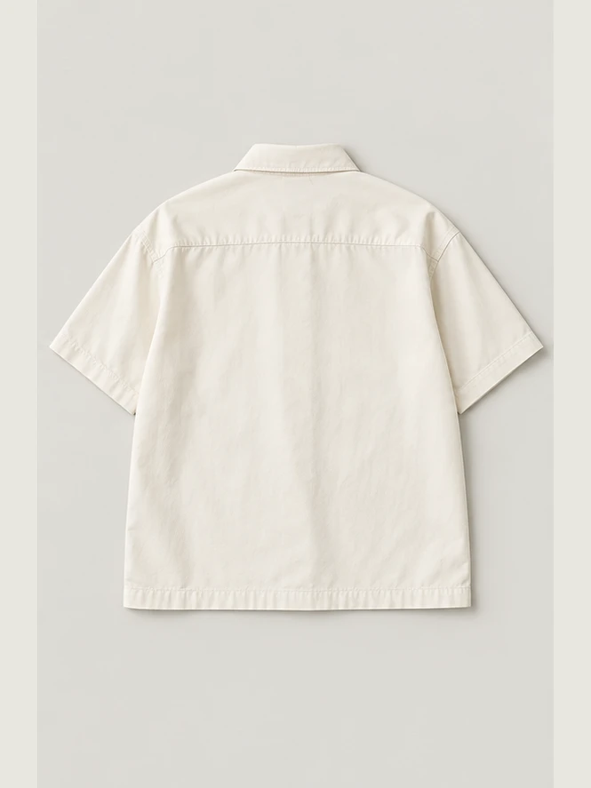
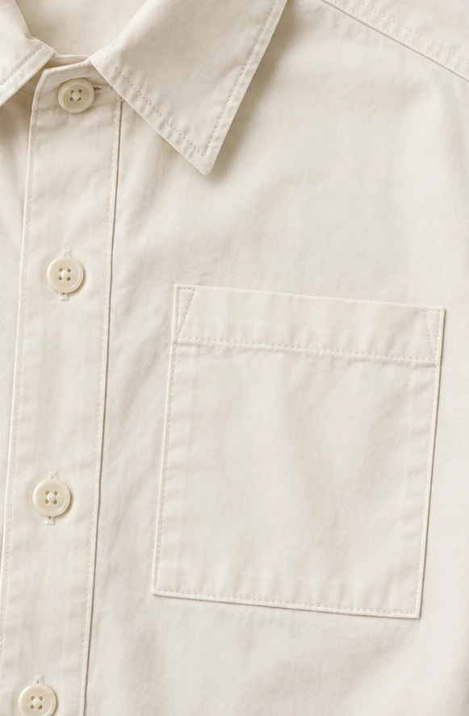

One shirt.
Three views.
Five buttons. One chest pocket.
The same cotton poplin, silhouette and Chalk colour.



Five buttons. One chest pocket.
The same cotton poplin, silhouette and Chalk colour.

